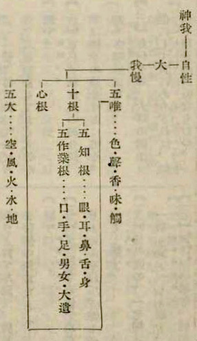
図１ 数論派二十五諦（国訳十九頁）
対訳和訳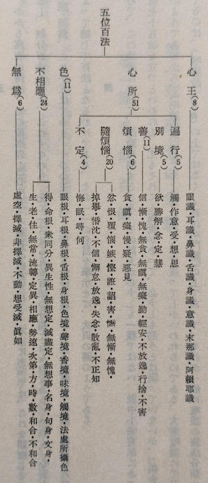
図２ 大乗の五位百法（唯識学研究一二六頁）
対訳和訳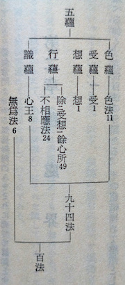
図３ 五蘊と百法（唯識学研究二二二頁）
対訳和訳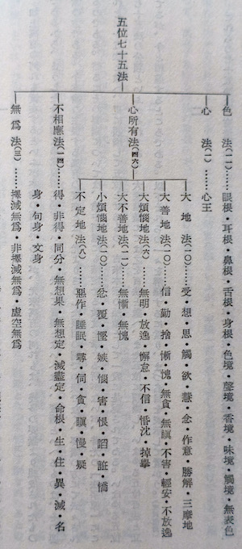
図４ 小乗の五位七十五法（倶舎学概論三十二頁）
対訳和訳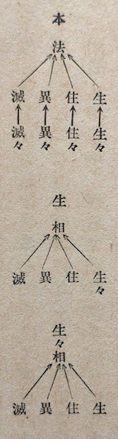
図５ 有為の四相の本相と随相（倶舎宗大意五十五頁）［＊ものを生じさせるのに〈生〉〈住〉〈異〉〈滅〉の四つの相が必要であり、〈生〉などを生じさせるのに〈生々〉〈住〉〈異〉〈滅〉の四つの相などが必要であり（〈住〉の場合には、〈住〉の代わりに〈住々〉などとなる）、〈生々〉を生じさせるのに還って〈生〉〈住〉〈異〉〈滅〉の四つの相が必要となる。］
対訳和訳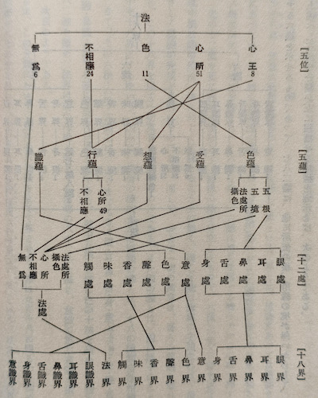
図６ 五位と五蘊・十二処・十八界（唯識学研究二二八頁）
対訳和訳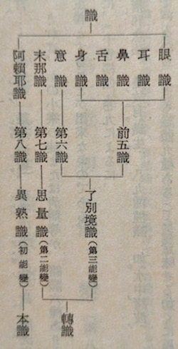
図７ 識の種類（唯識学研究二四三頁）
対訳和訳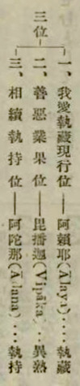
図８ 第八識体の三位（国訳七十二頁）
対訳和訳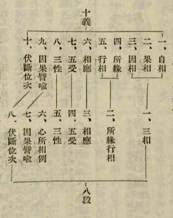
図９ 八段十義（国訳七十五頁）
対訳和訳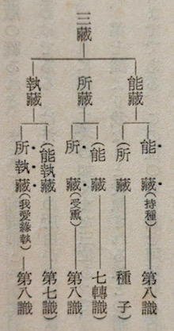
図１０ 三蔵（唯識学研究二四七頁）
対訳和訳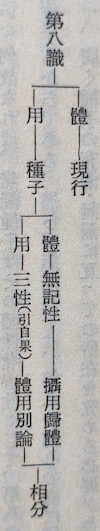
図１１ 第八識の体と用（唯識学研究四〇六頁）
対訳和訳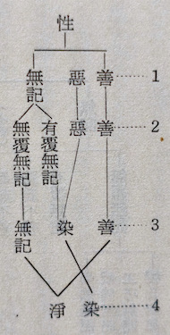
図１２ 性の種類（唯識学研究二三六頁）
対訳和訳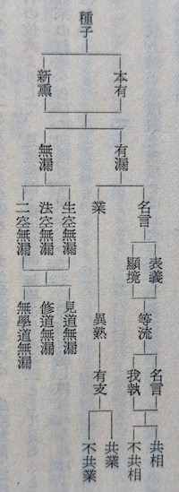
図１３ 種子の種類（唯識学研究四〇八頁）
対訳和訳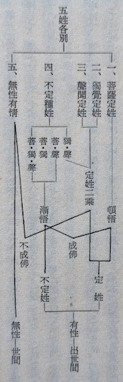
図１４ 五姓各別説（唯識学研究六三二頁）
対訳和訳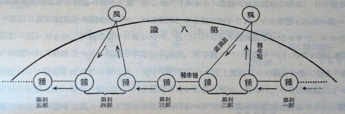
図１５ 現薫種・種生現・種生種（唯識学研究四一八頁）
対訳和訳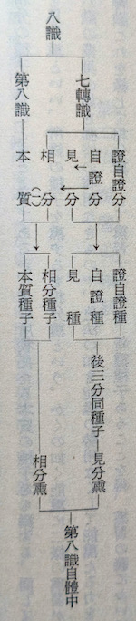
図１６ 薫習の詳細（唯識学研究四一六頁）
対訳和訳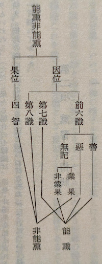
図１７ 能熏・非能熏（唯識学研究四一三頁）
対訳和訳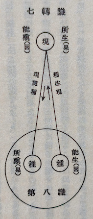
図１８ 現薫種・種生現（唯識学研究四一八頁）
対訳和訳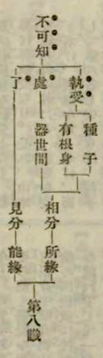
図１９ 第八識の行相（見分）と所縁（相分）（国訳１０１頁）
対訳和訳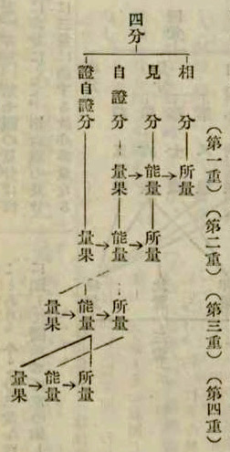
図２０ 四分（国訳１０５頁）
対訳和訳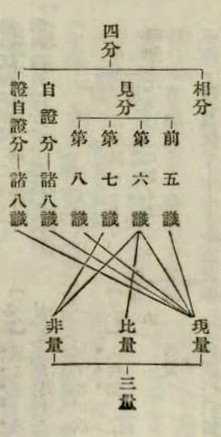
図２１ 四分と三量の関係（国訳１０６頁）
対訳和訳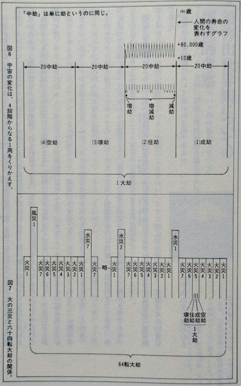
図２２ １大劫と６４転大劫（インド宇宙誌２７頁）
対訳和訳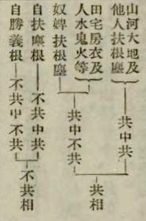
図２３ 共相と不共相とのさらに細かな分別（四句分別）（国訳１１０頁）
対訳和訳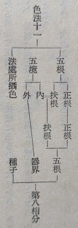
図２４ 第八識相分の色法（唯識学研究一九四頁）
対訳和訳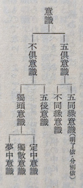
図２５ 意識の種類（唯識学研究三一二頁）［＊五識と倶に働いている意識を五倶の意識という。五識は働いているが、意識は全く別のことを考えているときは、不同縁意識という。五識の働きは止まったが、意識が続けて五識について考えているときを五後の意識という。五識とは関係なく意識が独りで働いている時を独頭の意識という］
対訳和訳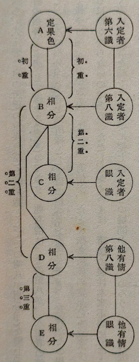
図２６ 定果色の仕組み（唯識学研究二〇一頁）［＊八地以上の菩薩が威徳定の力をもって衆生教化のために土砂から金銀魚米などを変じて受用させるのが、まさしくこの定果色で、法処所摂実色とも言われる。その仕組みは、禅定者が自らの第六識に変じた定果色（A)を疎所縁として第八識が相分（B)を変じ、五識がそれを本質として自らの相分（C)を変じて対象とすることにより、これで自分が定果色を見ることとなる。他者に関しては、まず他者の第八識が禅定者の第八識の相分（B)を疎所縁として自らの相分（D)を変じ、五識がそれを本質として自らの相分（E)を変じて対象とすることによって、他者も禅定者の定果色を見ることとなるのである］
対訳和訳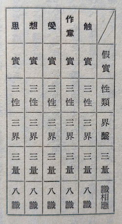
図２７ 遍行心所（唯識学研究一五〇頁）
対訳和訳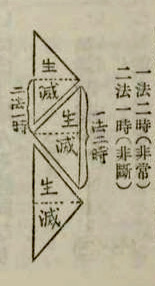
図２８ 金鎖の因果説（国訳１３１頁）
対訳和訳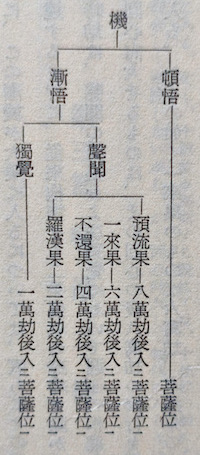
図２９ 頓悟の菩薩と漸悟の菩薩（唯識学研究六六四頁）
対訳和訳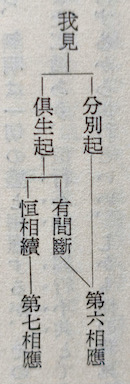
図３０ 我見の種類（唯識学研究二八八頁）
対訳和訳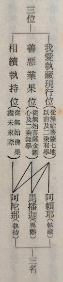
図３１ 第八識の三位と三名（唯識学研究二四九頁）
対訳和訳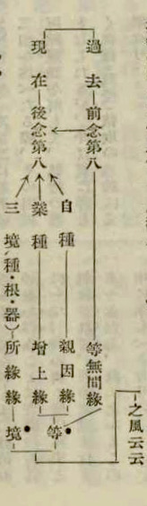
図３２ 境等の風にまつわる四縁（国訳１４８頁）
対訳和訳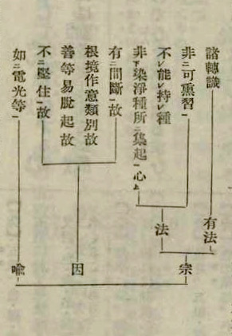
図３３ インド論理学（因明）の構造［有法（主語）、法（述語）、宗（主張）、因（根拠）、喩（例）］（国訳１５４頁）
対訳和訳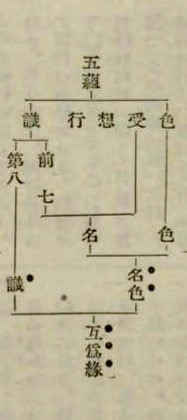
図３４ 識と名色とが互いに縁となる（国訳１６９頁）
対訳和訳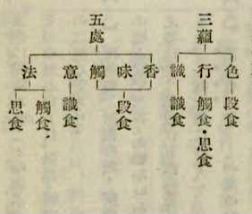
図３５ 四食と三蘊、五処（国訳１７３頁）
対訳和訳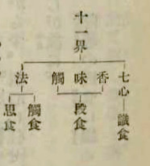
図３６ 四食と十一界（国訳１７３頁）
対訳和訳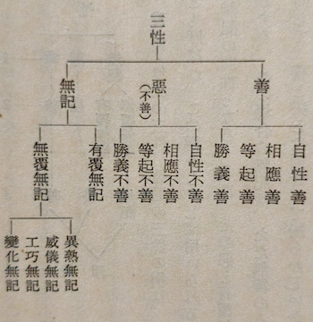
図３７ 三性詳記（唯識学研究二三五頁）
対訳和訳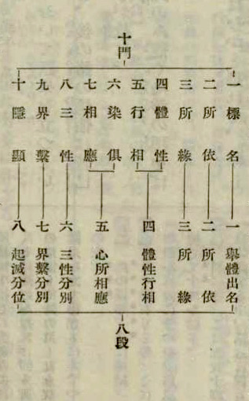
図３８ 八段十門（国訳１９０頁）
対訳和訳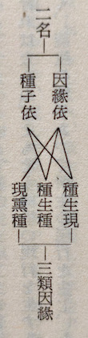
図３９ 種子依と因縁依（唯識学研究三五三頁）
対訳和訳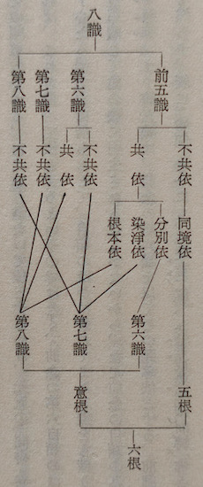
図４０ 倶有依（唯識学研究三六一頁）
対訳和訳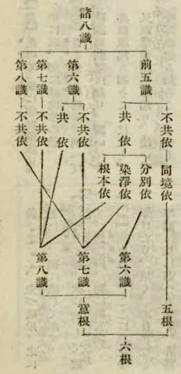
図４１ 護法論師の倶有依正義説（国訳２０７頁）
対訳和訳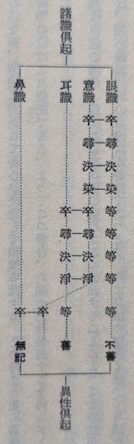
図４２ 諸識倶起（唯識学研究三一六頁）
対訳和訳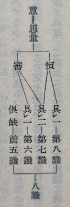
図４３ 恒審の条件（唯識学研究二七八頁）
対訳和訳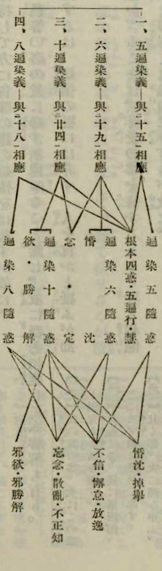
図４４ 四人の師の説（国訳２２８頁）
対訳和訳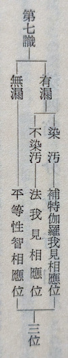
図４５ 第七識の三位（唯識学研究二九六頁）
対訳和訳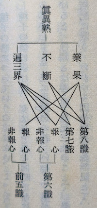
図４６ 真異熟（＝第八識）の条件（唯識学研究二五二頁）＊［第七識に業果はない。生まれ変わりの際には、その種子は十二縁起の〈名色〉位に入っている。十二縁起の項、参照］
対訳和訳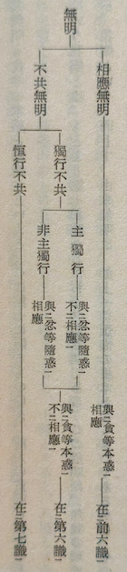
図４７ 戒賢論師の無明説（唯識学研究二八七頁）
対訳和訳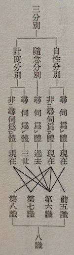
図４８ 三分別と八識（唯識学研究三五一頁）
対訳和訳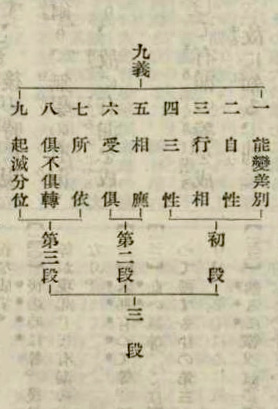
図４９ 三段九義（国訳２５３頁）
対訳和訳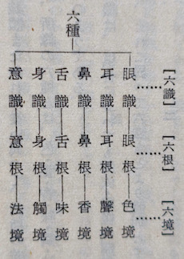
図５０ 六識・六根・六境（唯識学研究三〇二頁）
対訳和訳図５１ 六識の三性倶転説（唯識学研究３１６頁）
対訳和訳図５４ 適悦受と逼迫受（唯識学研究１４８頁）
対訳和訳図６３ 根本十煩悩の倶生起と分別起の内訳（国訳３１０頁）
対訳和訳図６４ 第一師と第二師の五受相応説（国訳３１５頁）［＊右側の第一師説の図において憂にはいずれの煩悩とも線が結ばれていないが、倶生起の身・辺見以外の煩悩とはすべて結ばれる筈である。逆に、左側の第二師説においては倶生の身見・辺見と憂とが結ばれてしまっているが、これは外されるべきである。］
対訳和訳図６５ 粗雑な姿における五受相応説（国訳３１６頁）［＊邪見・疑と苦とが線で結ばれてしまっているが外されるべきである。］
対訳和訳図６６ 十の根本煩悩と三性の関係（国訳３１７頁）
対訳和訳図６７ 随煩悩の三つの種類（国訳３２２頁）
対訳和訳図６８ 随煩悩（１）（唯識学研究一八三頁）
対訳和訳図６９ 随煩悩（２）（唯識学研究一八四頁）
対訳和訳図７０ 随煩悩の五受相応説（国訳３３６頁）
対訳和訳図７５ 不定心所の五受相応説（国訳３４８頁）
対訳和訳図７６ 不定心所の四無記との対応（国訳３４９頁）
対訳和訳図７７ 不定心所の三学との対応（国訳３５０頁）
対訳和訳図８２ 場所、時間、身体、働きの決定と不決定（国訳３７９頁）
対訳和訳図８３ 十二処と百法（唯識学研究二二五頁）
対訳和訳図８５ 現薫種・種生現（唯識学研究四一八頁）
対訳和訳図８７ 十因と十五依処および四縁の関係についての第一師の説（唯識学研究三八五頁）
対訳和訳図８９ 十因と四縁と五つの果との関係（国訳４１０頁）
対訳和訳図９０ 種子（習気）（唯識学研究四〇八頁）
対訳和訳図９２ 惑業苦、十二有支、能所引生支の関係（国訳４１９頁）
対訳和訳図９３ 小乗の三世両重の因果（国訳４２６頁）
対訳和訳図９９ 護法説と安慧説と難陀説（唯識学研究五二六頁）
対訳和訳図１００ 能遍計の安慧説と護法説（国訳４４１頁）
対訳和訳図１０１ 安慧説の四句分別（国訳４４１頁）
対訳和訳図１０２ 護法説の四句分別（国訳４４２頁）
対訳和訳図１０７ 五相と三性との関係（国訳４５３頁）
対訳和訳図１０８ 四法と三性との関係（国訳４５４頁）
対訳和訳図１０９ 四諦と三性との関係（国訳４５５頁）
対訳和訳図１１０ 世俗・勝義諦と三性との関係（国訳４５７頁）
対訳和訳図１１１ 三乗共同の世俗諦・勝義諦（国訳７頁）
対訳和訳図１１２ 菩薩乗の世俗諦・勝義諦（国訳４６２頁）
対訳和訳図１１３ 世俗諦と勝義諦（唯識学研究五七五頁）
対訳和訳図１１４ 菩薩の五つの修行階位（国訳４６５頁）
対訳和訳図１１５ 煩悩障と所知障（唯識学研究四九〇頁）
対訳和訳図１１７ 四尋伺・四如実智観（国訳４７３頁）
対訳和訳図１１９ 一心真見道（唯識学研究六九八頁）
対訳和訳図１２０ 三心相見道（唯識学研究七〇〇頁）
対訳和訳図１２１ 三心相見道と一心真見道（唯識学研究七〇一頁）
対訳和訳図１２３ 相見道と真見道（唯識学研究七〇三頁）
対訳和訳図１２５ 三慧と五位の関係（国訳４９６頁）
対訳和訳図１２６ 十重障と二十二愚（その一）（国訳４９９頁）
対訳和訳図１２７ 十重障と二十二愚（その二）（国訳５００頁）
対訳和訳図１２８ 分別起と倶生起の煩悩障と所知障を伏し断じる位と順番（国訳５０９頁）
対訳和訳図１２９ 三乗における涅槃の具・不具（国訳５２０頁）
対訳和訳図１３３ 仏身・仏土（唯識学研究七三三頁）
対訳和訳